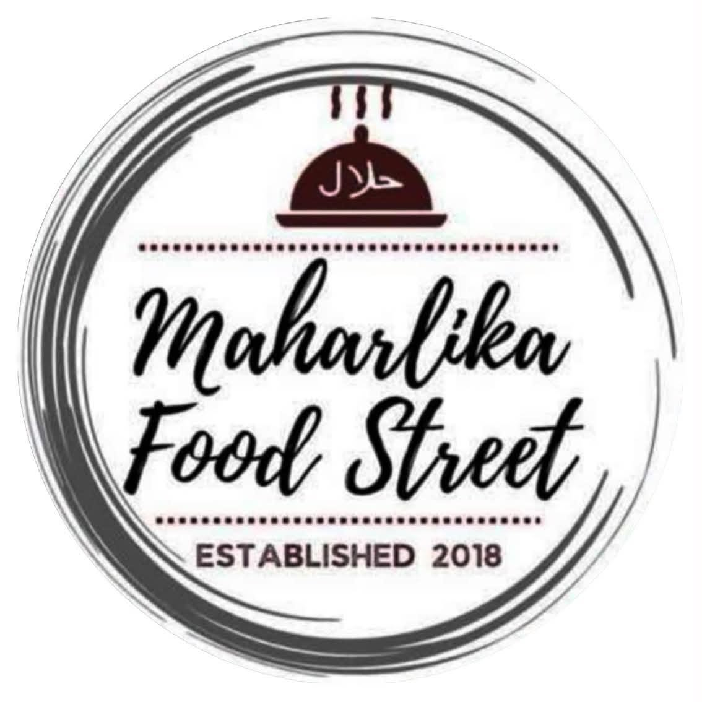
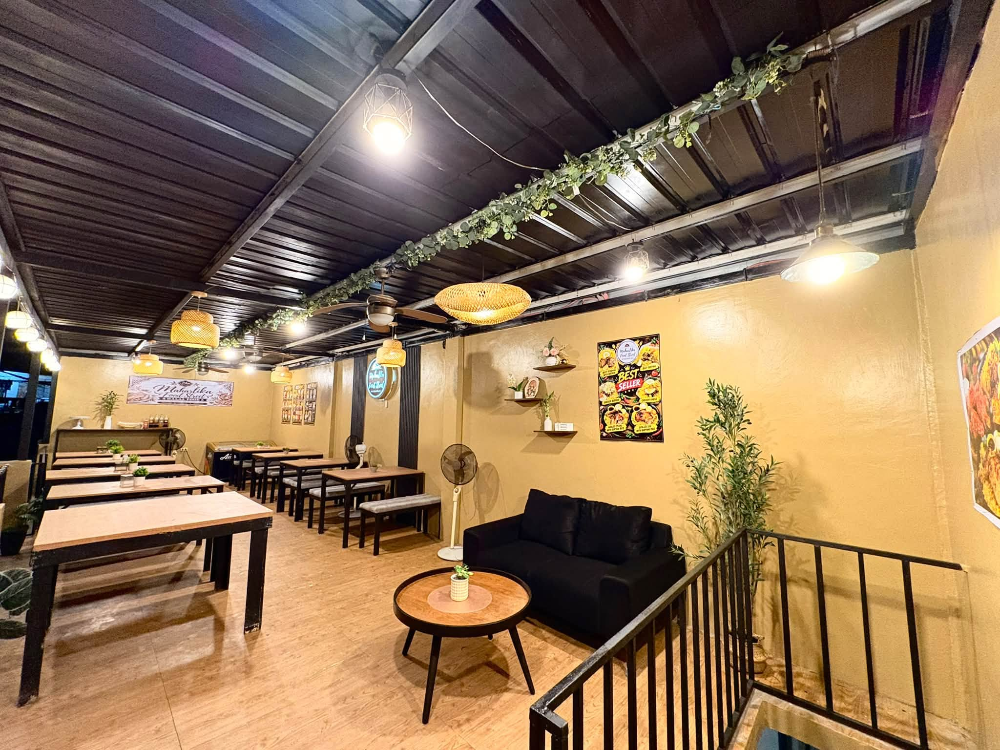

Good food
Familiar flavors and satisfying portions made to brighten your day.

Maharlika Food Street FOOD • FAMILY • FLAVOR
A WARM WELCOME, ALWAYS
Maharlika Food Street is a neighborhood-inspired food stop built around a simple idea: serve satisfying food and make everyone feel welcome.
Whether you're grabbing a quick bite, sharing a meal with friends, or ordering from home, we hope every visit gives you one more reason to come back.
Discover our menuWHAT MATTERS TO US
Familiar flavors and satisfying portions made to brighten your day.
A friendly welcome and an easy experience from browsing to ordering.
Food tastes better when there's someone to enjoy it with.